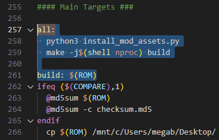

Advanced moding Set-Up
1.- Managing mod assets
1.- Create a new directory in “oot” folder to store all new mod assets with: mkdir mod_assets
2.- Now copy the script stored in this git: https://gist.github.com/krm01/4ca28bb24d5410d186d10cc96f6f9e5d
Git file
//(Content from 01/12/2023)
#!/usr/bin/env python3
"""
copies mod_assets into assets. assumes file is located at project root
"""
import os
import shutil
import time
import glob
import typing as T
from pathlib import Path
def log(msg: str):
print(f"[{__file__}]: {msg}")
def remove_stale_assets(root: str, copied_files: T.List[str], last_cache_time: int):
modified_times: T.Dict[str, int] = { file: int(os.path.getmtime(file)) for file in copied_files }
stale = [file for file, ts in modified_times.items() if ts > last_cache_time]
if len(stale) == 0:
log(f"No stale assets since last build")
return
removed_count = 0
for file in stale:
rel = os.path.relpath(file, root)
pattern = os.path.join(root, "build", os.path.dirname(rel), "*")
for match in glob.glob(pattern, recursive=True):
os.remove(match)
removed_count += 1
log(f"Removed {removed_count} stale asset(s) from {root}")
def copy_all(root: str) -> T.List[str]:
src_root = os.path.join(root, "mod_assets")
dst_root = os.path.join(root, "assets")
copied_files: T.List[str] = []
for src_dir, _, file_names in os.walk(src_root):
dst_dir = src_dir.replace(src_root, dst_root, 1)
Path(dst_dir).mkdir(parents=True, exist_ok=True)
for file_name in file_names:
src_file = os.path.join(src_dir, file_name)
dst_file = os.path.join(dst_dir, file_name)
shutil.copy2(src_file, dst_file)
copied_files.append(dst_file)
log(f"Copied {len(copied_files)} file(s) from mod_assets")
return copied_files
def remove_stale_actors(root: str, last_cache_time: int):
actors_src_dir = os.path.join(root, "src", "overlays", "actors")
actors_build_dir = os.path.join(root, "build", "src", "overlays", "actors")
stale_directories = set()
for actor_dir, _, actor_files in os.walk(actors_src_dir):
for actor_file in actor_files:
modified_time = os.path.getmtime(os.path.join(actor_dir, actor_file))
if modified_time > last_cache_time:
stale_directories.add(actor_dir)
removed = 0
for actor_dir in stale_directories:
overlay_name = os.path.split(actor_dir)[1]
build_path = os.path.join(actors_build_dir, overlay_name)
if os.path.exists(build_path):
log(f"Removing stale actor {overlay_name}")
shutil.rmtree(build_path)
removed += 1
if removed == 0:
log("No stale actors since last build")
else:
log(f"Removed {removed} total stale actors")
def update_cache_time(root: str) -> int:
build_dir = os.path.join(root, "build")
if not os.path.exists(build_dir):
os.mkdir(build_dir)
cache_file = os.path.join(build_dir, ".mod_assets_cache")
if os.path.exists(cache_file):
with open(cache_file) as fd:
last_time = int(fd.read().strip())
else:
last_time = 0
with open(cache_file, "w") as fd:
fd.write(f"{int(time.time())}")
log(f"Updated {cache_file}")
return last_time
def main():
root = os.path.dirname(os.path.realpath(__file__))
last_cache_time = update_cache_time(root)
copied_files = copy_all(root)
remove_stale_assets(root, copied_files, last_cache_time)
# check actor overlays for stale include dependencies i.e. "*.inc.c"
remove_stale_actors(root, last_cache_time)
if __name__ == "__main__":
main()
3.- Go to VSCode and press Ctrl+N to open a new file
4.- Paste the content of the file there and save the file in /home/mega/OOT/oot/install_mod_assets.py
Warning
In th example the path starts with /home/mega/. In your case, instead of mega, you must put there your Ubuntu wsl username, the one you defined the first time you opened it.
5.- Open the Makefile file and go to the all: section
Note
You can find all section by pressing Ctrl+F and searching for all:
6.- Rename all: with buld:
7.- Over that, add another all: and paste the following code below:
python3 install_mod_assets.py
make -j$(shell nproc) build
Warning
You need to use tabulations in this file. If you use spaces, it will fail
The result should look like this:
Note
This will execute the python script and then do the make build command with the maximum number fo cores available
2.- Automatically launching the emulator when generating the rom
- 1.- Find the Path of the emulator you want to use from the Ubuntu console.
You can achieve this looking for your emulator in Windows and coping the path in the top of the folder
- 2.- Copy that path and go to the Ubuntu terminal
1.- Type there
ls -la “/mnt/and right-click to paste the path2.- Add another
“at the end and modify the path changing the\with/3.- Put in lowercase the letter at the beginning of the path and remove the
:4.- Press enter and, if it worked fine, you should see something like this:
Note
I’m using Project64 but you can use your favourite emulator
- 3.- Press Up-arrow and at the end of the path, inside the doble quotes, add the emulator “.exe” file
Press enter again to check that is correctly spelled.(if it’s fine,the console will output the absolute path of the file)
4.- Copy the whole path with the double quotes.
Note
You can copy by selecting the path and right-clicking. If the selection outline disappears, you have copied the selection successfuly
5.- Go to the Makefile file, press Ctrl+F, search for EMULATOR ?= and paste the emulator path after the ?=
- 6.- In the Makefile file, search with Ctrl+F
run: 1.- Remove
$(ROM)from therun: $(ROM)2.- Add a new line, tabulate and write
make3.- A few lines below, after the
endif, change the$<with$(ROM)
7.- If everything is done correctly, you should be able to type make run in Ubuntu console and see how the rom is built and it’s automatically executed with the emulator you selected
Note
Project64 sometimes does not load and the screen is set to black. If that happens, just clone and type make run again
3.- Using git to manage the mod project
Note
Since we already has used git to clone the oot repository, we don’t ned to run git init inside the oot folder to start a new repository
1.- To check the status of the current situation, you can type git status and you will see information about witch files have changed and witch files are new in the repository
2.- You will need to set-up two main git variables. You can do that with the following commands:
git config --global user.email "[Your e-mail]"
git config --global user.name "[Your name]"
3.- Everytime you want to save a version, execute in order the following commands:
git add -A
git commit -m “[Here you can put a descriptive message about what are the changes made in this version]”
4.- You can check the history of commits with git log
Note
to leave the log view, just pres Q
4.- Disable debug features
4-1 Create debug flags
1.- Go to the Makefile file, press Ctrl+F and search for CFLAGS ?=
2.- Delete that line and paste the following code:
# List of all custom debug flags:
# -DENABLE_DEBUG_FEATURES -> Activates ALL debug features
# -DENABLE_DEBUG_FEATURE_VISUAL_BUTTON_MARKER -> Activates the visual indicator of the pad button you are pushing
# -DENABLE_DEBUG_FEATURE_SKIP_START_CUTSCENE -> Activates going straigth to a cutscene in the main menu when pressing START
# -DENABLE_DEBUG_FEATURE_MAP_SELECTOR -> Activates the ability to access to the map selector
# -DENABLE_DEBUG_FEATURE_DEBUG_MENU -> Activates the ability to go to the debug meny when pressing L in the game menu
# -DENABLE_DEBUG_FEATURE_NO_CLIP -> Activates the ability to enter in no-clip mode
# -DENABLE_DEBUG_FEATURE_FILE1_DEBUG -> Activates the debug behabiour of the FILE1
#CFLAGS ?=
CFLAGS ?= -DENABLE_DEBUG_FEATURES
4-4 Disable map selector and other stuff
1.- In VSCode press Ctrl+P to search for a file called code_800D31A0.c and open it
2.- Remove the second function whole( func_800D31F0 ) and paste the following code:
void func_800D31F0(void) {
//Something
#if defined(ENABLE_DEBUG_FEATURES) || defined(ENABLE_DEBUG_FEATURE_MAP_SELECTOR)
gIsCtrlr2Valid = (gPadMgr.validCtrlrsMask & 2) != 0;
#endif
}
4-6 Disable no clip
1.- In VSCode press Ctrl+P to search for a file called z_player.c and open it
2.- Press Ctrl+F and search for DEBUG MODE
3.- Remove the whole function ( func_8084FCAC ) and paste the following code:
Function replacement
s32 func_8084FCAC(Player* this, PlayState* play) {
#if defined(ENABLE_DEBUG_FEATURES) || defined(ENABLE_DEBUG_FEATURE_NO_CLIP)
sControlInput = &play->state.input[0];
if ((CHECK_BTN_ALL(sControlInput->cur.button, BTN_A | BTN_L | BTN_R) &&
CHECK_BTN_ALL(sControlInput->press.button, BTN_B)) ||
(CHECK_BTN_ALL(sControlInput->cur.button, BTN_L) && CHECK_BTN_ALL(sControlInput->press.button, BTN_DRIGHT))) {
D_808535D0 ^= 1;
if (D_808535D0) {
Camera_RequestMode(Play_GetCamera(play, CAM_ID_MAIN), CAM_MODE_Z_AIM);
}
}
if (D_808535D0) {
f32 speed;
if (CHECK_BTN_ALL(sControlInput->cur.button, BTN_R)) {
speed = 100.0f;
} else {
speed = 20.0f;
}
DebugCamera_ScreenText(3, 2, "DEBUG MODE");
if (!CHECK_BTN_ALL(sControlInput->cur.button, BTN_L)) {
if (CHECK_BTN_ALL(sControlInput->cur.button, BTN_B)) {
this->actor.world.pos.y += speed;
} else if (CHECK_BTN_ALL(sControlInput->cur.button, BTN_A)) {
this->actor.world.pos.y -= speed;
}
if (CHECK_BTN_ANY(sControlInput->cur.button, BTN_DUP | BTN_DLEFT | BTN_DDOWN | BTN_DRIGHT)) {
s16 angle;
s16 temp;
angle = temp = Camera_GetInputDirYaw(GET_ACTIVE_CAM(play));
if (CHECK_BTN_ALL(sControlInput->cur.button, BTN_DDOWN)) {
angle = temp + 0x8000;
} else if (CHECK_BTN_ALL(sControlInput->cur.button, BTN_DLEFT)) {
angle = temp + 0x4000;
} else if (CHECK_BTN_ALL(sControlInput->cur.button, BTN_DRIGHT)) {
angle = temp - 0x4000;
}
this->actor.world.pos.x += speed * Math_SinS(angle);
this->actor.world.pos.z += speed * Math_CosS(angle);
}
}
Player_ZeroSpeedXZ(this);
this->actor.gravity = 0.0f;
this->actor.velocity.z = 0.0f;
this->actor.velocity.y = 0.0f;
this->actor.velocity.x = 0.0f;
if (CHECK_BTN_ALL(sControlInput->cur.button, BTN_L) && CHECK_BTN_ALL(sControlInput->press.button, BTN_DLEFT)) {
Flags_SetTempClear(play, play->roomCtx.curRoom.num);
}
Math_Vec3f_Copy(&this->actor.home.pos, &this->actor.world.pos);
return 0;
}
return 1;
#else
return 1;
#endif
}
4-7 Disable File1 debug status
1.- In VSCode press Ctrl+P to search for a file called z_sram.c and open it
2.- Press Ctrl+F and search for buttonIndex != 0
3.- Remove the whole if statement and paste the following code:
#if defined(ENABLE_DEBUG_FEATURES) || defined(ENABLE_DEBUG_FEATURE_FILE1_DEBUG)
if (fileSelect->buttonIndex != 0) {
Sram_InitNewSave();
} else {
Sram_InitDebugSave();
}
#else
Sram_InitNewSave();
#endif
3.- Remove the next if statement (under gSaveContext declarations) and paste the following code:
#if defined(ENABLE_DEBUG_FEATURES) || defined(ENABLE_DEBUG_FEATURE_FILE1_DEBUG)
if (fileSelect->buttonIndex == 0) {
gSaveContext.save.cutsceneIndex = 0;
}
#endif
4.- Press Ctrl+P to search for a file called z_file_choose.c and open it
5.- Press Ctrl+F and search for buttonIndex == FS_BTN_SELECT_FILE_1
3.- Remove the whole if(){}else{} statement and paste the following code:
If-else replacement
#if defined(ENABLE_DEBUG_FEATURES) || defined(ENABLE_DEBUG_FEATURE_FILE1_DEBUG)
if (this->buttonIndex == FS_BTN_SELECT_FILE_1) {
Audio_PlaySfxGeneral(NA_SE_SY_FSEL_DECIDE_L, &gSfxDefaultPos, 4, &gSfxDefaultFreqAndVolScale,
&gSfxDefaultFreqAndVolScale, &gSfxDefaultReverb);
gSaveContext.fileNum = this->buttonIndex;
Sram_OpenSave(&this->sramCtx);
gSaveContext.gameMode = GAMEMODE_NORMAL;
SET_NEXT_GAMESTATE(&this->state, MapSelect_Init, MapSelectState);
this->state.running = false;
} else {
Audio_PlaySfxGeneral(NA_SE_SY_FSEL_DECIDE_L, &gSfxDefaultPos, 4, &gSfxDefaultFreqAndVolScale,
&gSfxDefaultFreqAndVolScale, &gSfxDefaultReverb);
gSaveContext.fileNum = this->buttonIndex;
Sram_OpenSave(&this->sramCtx);
gSaveContext.gameMode = GAMEMODE_NORMAL;
SET_NEXT_GAMESTATE(&this->state, Play_Init, PlayState);
this->state.running = false;
}
#else
Audio_PlaySfxGeneral(NA_SE_SY_FSEL_DECIDE_L, &gSfxDefaultPos, 4, &gSfxDefaultFreqAndVolScale,
&gSfxDefaultFreqAndVolScale, &gSfxDefaultReverb);
gSaveContext.fileNum = this->buttonIndex;
Sram_OpenSave(&this->sramCtx);
gSaveContext.gameMode = GAMEMODE_NORMAL;
SET_NEXT_GAMESTATE(&this->state, Play_Init, PlayState);
this->state.running = false;
#endif